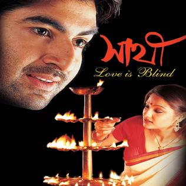
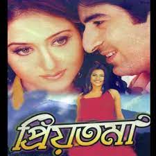
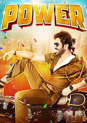
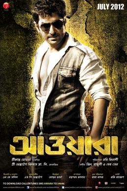
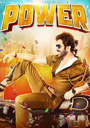
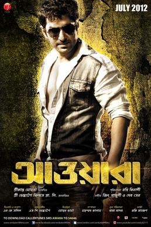

Real name: Jeetendra Madnani
Nickname: Jeet, Daboo, Ganglu
profession: Model, Actor, Artist
Date of Birth: 30 Nov 1978
Educational Qualification: Graduate
Physical StateHeight (Approx): 6'0"
Weight (Approx): 75(kilograms)
Career
Jeet started his modeling career in 1993. His first acting assignment was Bishabriksha (1994–95), a Bengali TV series directed by Bishnu Palchaudhuri. He made his big screen debut with Chandu (2001) a Telugu film. His first success came in 2002, opposite Priyanka Trivedi, through Sathi, a highly successful romantic drama, directed by Haranath Chakraborty,
Movies:
more
- Shathi
- Shatru
- Priyotoma
- Power
- Sultan
- Hello Mem Shaheb
- Cranti
- Jor
- Awara
- Josh
- Abhiman
- Boss
- Don Badsha
- Bondhon
- Sat pake badha
Movies Poster
 
 



Sports ventures
Jeet was also the ex-captain of the Bengal Tigers in the Celebrity Cricket League.[29] Jeet had also acquired the Kolkata franchise of the first-ever multi-nation 2016 Premier Futsal season that started on 15 July 2016. The team is known as "Kolkata 5s" as each franchise was similarly named in the inaugural season. [30]